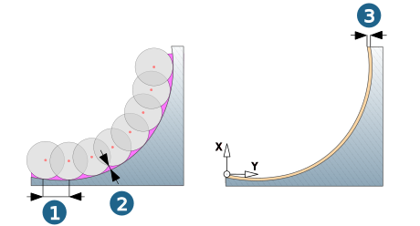
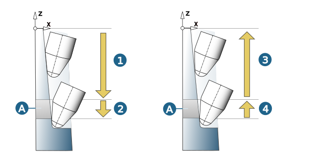

Parameters
Infeed
Constant: Constant distance between the milling paths over the entire area (1). Define the Horizontal stepover.
Scallop optimized: Taking into account the surface radius and tool radius, the toolpaths are generated so that the defined scallop height is maintained in the entire area (2). Specify the Scallop height.
Allowance
Allowance: Remaining material (3).
|  |
Feedrate
Down: (1) Feedrate during down movement.
Down fanning: (2) Reduced feedrate during the down movement for the area of transition (A) from the surfaces to be machined to the bottom surfaces.
Up: (3) Feedrate during up movement.
Up fanning: (4) Reduced feedrate during the up movement for the area of transition (A) from the bottom surfaces to the surfaces to be machined.
|  |
Retract mode
Z level for retract movements.
Clearance plane: All retract movements take place via the clearance plane.
Clearance distance: 3D retract movements take place via the clearance distance.
5X retract movements take place via the clearance plane when the angle difference for various tool inclinations between two machining areas is greater than the defined Distance angle limit ( Setup dialog page).
Production mode: 3D retract movements take place via the shortest possible link between the infeed planes or the surfaces to be machined.
5X retract movements take place via the clearance plane when the angle difference for various tool inclinations between two machining areas is greater than the defined Distance angle limit ( Setup dialog page).
Safety
Clearance plane: Specify the level of the clearance plane.
Axial clearance / Side clearance: Minimum distance in an axial or lateral direction from the surface of the model.
For further information on retract mode and safety, see section Retract mode and Safety.